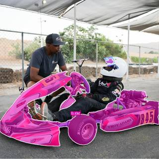
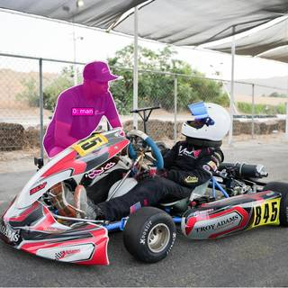

To determine the position of the man wearing the black hat relative to Car No. 845, we can follow these steps:
- Identify Car No. 845: The go-kart in the image is clearly marked with "845" on its side.
- Determine the Car's Orientation: The front of the car (the nose) is pointing toward the left side of the image.
- Identify the Man in the Black Hat: He is the person standing and leaning over the driver of the go-kart.
- Determine the Relative Position: Imagine yourself sitting in the driver's seat of the car, facing forward (toward the left of the image). The man in the black hat is positioned on the side of the car closest to the fence. From the driver's perspective, this is the left side of the vehicle.
Therefore, seen from Car No. 845, the man wearing the black hat is to the left.
C
# The man in the black hat is standing on the far side of the go-kart. # Since the go-kart is facing left in the image, the far side is the car's left side. ReturnAnswer("C")
[ReturnAnswer] Answer submitted: C
Task Analysis The objective is to determine the relative position (left or right) of a "man wearing the black hat" from the perspective of "Car No.845". This is a spatial relationship question requiring an Object Perspective coordinate system. "Seen from Car No.845" means the reference frame is centered on the car, with the "forward" direction being the direction the car is facing.
Information Needs
- Identification: Locate "Car No.845" and the "man wearing the black hat" in the image.
- 3D Position: Obtain the world-space 3D coordinates of both the car and the man.
- Orientation: Determine the facing direction (heading vector) of Car No.845.
- Relative Vector: Compute the vector from the car to the man and project it onto the car's right-hand axis to determine if the man is to the left or right.
Computation Plan
-
Initial Visual Inspection:
- Call
show(InputImages[0])to identify the scene layout and locate the target objects.
- Call
-
Object Grounding and Segmentation:
- Use
vlm.locate(InputImages[0], ...)to find the bounding box for "Car No.845" (searching for the specific number). - Use
vlm.locate(InputImages[0], ...)to find the bounding box for the "man wearing the black hat". - Convert normalized coordinates to pixels using
tools.Geometry.normalized_to_pixel. - Generate masks using
tools.SAM3.segment_image_by_boxfor both the car and the man. - Verify masks are non-empty and visually correct using
seg.visualize(0)andshow().
- Use
-
3D Geometry Extraction:
- Perform 3D reconstruction:
recon = tools.Reconstruct.Reconstruct(InputImages). - Calculate the 3D centroids of both objects using
seg.get_centroid_3d(recon, frame=0, object=...).
- Perform 3D reconstruction:
-
Determining Reference Frame (Car's Perspective):
- Case A (Camera is the Car): If the visual inspection shows the camera is mounted on or is Car No.845, the car's forward vector is the camera's forward vector (
recon.extrinsics[0][:3, 2]) and the right vector is the camera's right vector (recon.extrinsics[0][:3, 0]). - Case B (Car is an object in scene): If the car is visible in the frame, use
vlm.ask_with_thinkingto determine which way the car is facing (e.g., "Is the front of Car No.845 facing toward the left, right, or center of the image?"). Use this to define the car's forward vector $\vec{f}$ and right vector $\vec{r}$.
- Case A (Camera is the Car): If the visual inspection shows the camera is mounted on or is Car No.845, the car's forward vector is the camera's forward vector (
-
Relative Direction Calculation:
- Compute the vector from the car to the man: $\vec{v} = \text{Pos}{\text{man}} - \text{Pos}{\text{car}}$.
- Compute the dot product of $\vec{v}$ with the car's right vector $\vec{r}$: $\text{score} = \vec{v} \cdot \vec{r}$.
- If $\text{score} > 0$, the man is to the right.
- If $\text{score} < 0$, the man is to the left.
Verification
- Mask Verification: Visually confirm that the SAM3 masks accurately cover Car No.845 and the man with the black hat.
- Centroid Sanity Check: Ensure the 3D centroids are physically plausible relative to each other.
- Orientation Check: Cross-reference the VLM's description of the car's facing direction with the visual evidence in the image.
- Consistency: Compare the quantitative dot product result with the qualitative visual layout (e.g., if the dot product says "right", the man should generally appear to the right of the car's center line from the car's own perspective).
Fallbacks
- If
vlm.locatefails to find "Car No.845" by number, usevlm.ask_with_thinkingto identify all cars and find the one with the matching number. - If the car's orientation is ambiguous, use the long axis of the car's bounding box as a proxy for its heading, though this is lower confidence.
- If 3D centroids are noisy, use
seg.get_masked_pointsand take the median of the points.
CHECKLIST
[
{"priority": "HIGH", "description": "Verify the identified car is specifically No. 845 and the man is wearing a black hat"},
{"priority": "HIGH", "description": "Confirm the facing direction (forward vector) of Car No.845 is correctly established"},
{"priority": "HIGH", "description": "Verify that the 3D centroids for both the car and the man are accurately computed and non-NaN"},
{"priority": "MEDIUM", "description": "Cross-check the calculated relative direction (left/right) with the visual layout of the scene"}
]
{ "tool": "show", "args": { "image": "InputImages[0]" } }
[image: show_0001]
=== Step 0 Execution Feedback === [SUCCESS] Code executed in 0.36s. [Variables] New/changed: result_0: NoneType [Inline Images] 1 image(s) attached below. Labels: InputImages[0] [show() budget] 249/250 images remaining.
{ "tool": "feedback.ask_vlm", "args": { "visual_input": "InputImages[0]", "question": "Give the bounding box (x1, y1, x2, y2) in 0-1000 normalized scale for the man wearing the black hat. Reply with ONLY the numbers." } }
=== Step 1 Execution Feedback === [ERROR] Skipped: LLM response was not in the required format.
{ "tool": "vlm.locate", "args": { "visual_input": "InputImages[0]", "question": "Give the bounding box (x1, y1, x2, y2) in 0-1000 normalized scale for the man wearing the black hat. Reply with ONLY the numbers." } }
[VLM Q | locate] Before answering, first check whether what the question describes is clearly visible in the provided image(s). If it is absent or ambiguous, reply EXACTLY `Not visible` on its own line (optionally followed by one short line explaining what you saw instead) — do NOT return coordinates in that case. Only if the requested target is clearly and unambiguously present, answer the request below. Request: Give the bounding box (x1, y1, x2, y2) in 0-1000 normalized scale for the man wearing the black hat. Reply with ONLY the numbers. [VLM A | locate] 148 210 426 550
=== Step 2 Execution Feedback === [SUCCESS] Code executed in 473.17s. [Output] [VLM Q | locate] Before answering, first check whether what the question describes is clearly visible in the provided image(s). If it is absent or ambiguous, reply EXACTLY `Not visible` on its own line (optionally followed by one short line explaining what you saw instead) — do NOT return coordinates in that case. Only if the requested target is clearly and unambiguously present, answer the request below. Request: Give the bounding box (x1, y1, x2, y2) in 0-1000 normalized scale for the man wearing the black hat. Reply with ONLY the numbers. [VLM A | locate] 148 210 426 550 [Variables] New/changed: result_2: str [Tool Calls] 1 tool/VLM call(s) this step.
{ "tool": "vlm.locate", "args": { "visual_input": "InputImages[0]", "question": "Give the bounding box (x1, y1, x2, y2) in 0-1000 normalized scale for the go-kart with the number 845 (or B45) on the side. Reply with ONLY the numbers." } }
[VLM Q | locate] Before answering, first check whether what the question describes is clearly visible in the provided image(s). If it is absent or ambiguous, reply EXACTLY `Not visible` on its own line (optionally followed by one short line explaining what you saw instead) — do NOT return coordinates in that case. Only if the requested target is clearly and unambiguously present, answer the request below. Request: Give the bounding box (x1, y1, x2, y2) in 0-1000 normalized scale for the go-kart with the number 845 (or B45) on the side. Reply with ONLY the numbers. [VLM A | locate] 0 362 998 925
=== Step 3 Execution Feedback === [SUCCESS] Code executed in 368.89s. [Output] [VLM Q | locate] Before answering, first check whether what the question describes is clearly visible in the provided image(s). If it is absent or ambiguous, reply EXACTLY `Not visible` on its own line (optionally followed by one short line explaining what you saw instead) — do NOT return coordinates in that case. Only if the requested target is clearly and unambiguously present, answer the request below. Request: Give the bounding box (x1, y1, x2, y2) in 0-1000 normalized scale for the go-kart with the number 845 (or B45) on the side. Reply with ONLY the numbers. [VLM A | locate] 0 362 998 925 [Variables] New/changed: result_3: str [Tool Calls] 1 tool/VLM call(s) this step.
{ "tool": "tools.Geometry.normalized_to_pixel", "args": { "coords": [ 148, 210, 426, 550 ], "width": "InputImages[0].width", "height": "InputImages[0].height" } }
=== Step 4 Execution Feedback === [SUCCESS] Code executed in 0.01s. [Variables] New/changed: result_4: list, len=4 [Tool Calls] 1 tool/VLM call(s) this step.
{ "tool": "tools.Geometry.normalized_to_pixel", "args": { "coords": [ 0, 362, 998, 925 ], "width": "InputImages[0].width", "height": "InputImages[0].height" } }
=== Step 5 Execution Feedback === [SUCCESS] Code executed in 0.01s. [Variables] New/changed: result_5: list, len=4 [Tool Calls] 1 tool/VLM call(s) this step.
{ "tool": "tools.SAM3.segment_image_by_text", "args": { "image": "InputImages[0]", "prompt": "man wearing a black hat", "label": "man_black_hat" } }
=== Step 7 Execution Feedback === [SUCCESS] Code executed in 0.51s. [Variables] New/changed: result_7: PerFrameMask, frames=[0] [Tool Calls] 1 tool/VLM call(s) this step.
{ "tool": "tools.SAM3.segment_image_by_text", "args": { "image": "InputImages[0]", "prompt": "go-kart", "label": "car_845" } }
=== Step 8 Execution Feedback === [SUCCESS] Code executed in 0.42s. [Variables] New/changed: result_8: PerFrameMask, frames=[0] [Tool Calls] 1 tool/VLM call(s) this step.
{ "tool": "show", "args": { "image": [ "InputImages[0]", "result_7.visualize(0)", "result_8.visualize(0)" ] } }
[image: show_0002]


=== Step 9 Execution Feedback === [SUCCESS] Code executed in 1.64s. [Variables] New/changed: result_9: NoneType [Inline Images] 3 image(s) attached below. Labels: [InputImages[0], result_7.visualize(0), result_8.visualize(0)] [show() budget] 246/250 images remaining.
=== Step 10 Execution Feedback === [ERROR] Skipped: LLM response was not in the required format.
{ "tool": "tools.Reconstruct.Reconstruct", "args": { "frames": "InputImages" } }
=== Step 11 Execution Feedback === [SUCCESS] Code executed in 0.82s. [Variables] New/changed: result_11: Reconstruction, frames=[0] [Tool Calls] 1 tool/VLM call(s) this step.
=== Step 12 Execution Feedback === [ERROR] Skipped: LLM response was not in the required format.
{ "tool": "vlm.ask_with_thinking", "args": { "visual_input": "InputImages[0]", "question": "Identify the facing direction of the go-kart (Car No.845). Which way is the front of the car pointing relative to the image (e.g., left, right, towards camera, away from camera)? Also, determine if the man in the black hat is standing on the left side or the right side of the car from the driver's perspective." } }
[VLM Q | thinking] Identify the facing direction of the go-kart (Car No.845). Which way is the front of the car pointing relative to the image (e.g., left, right, towards camera, away from camera)? Also, determine if the man in the black hat is standing on the left side or the right side of the car from the driver's perspective. [VLM A | thinking] The front of the go-kart (Car No. 845) is pointing towards the left of the image. From the driver's perspective, the man in the black hat is standing on the left side of the car.
=== Step 13 Execution Feedback === [SUCCESS] Code executed in 29.18s. [Output] [VLM Q | thinking] Identify the facing direction of the go-kart (Car No.845). Which way is the front of the car pointing relative to the image (e.g., left, right, towards camera, away from camera)? Also, determine if the man in the black hat is standing on the left side or the right side of the car from the driver's perspective. [VLM A | thinking] The front of the go-kart (Car No. 845) is pointing towards the left of the image. From the driver's perspective, the man in the black hat is standing on the left side of the car. [Variables] New/changed: result_13: str [Tool Calls] 1 tool/VLM call(s) this step.
{ "tool": "ReturnAnswer", "args": { "answer": "C" } }
[ReturnAnswer] Answer submitted: C
🛠️ Decided to use 2 tool(s)
[ { "name": "vlm__detect_one", "arguments": { "image_index": 0, "obj_name": "man wearing the black hat" } }, { "name": "vlm__detect_one", "arguments": { "image_index": 0, "obj_name": "Car No.845" } } ]
⚡ Executing vlm__detect_one...
{ "image_index": 0, "obj_name": "man wearing the black hat" }
✅ vlm__detect_one completed (with generated image)
⚡ Executing vlm__detect_one...
{ "image_index": 0, "obj_name": "Car No.845" }
✅ vlm__detect_one completed (with generated image)
🧠 Synthesizing results from 2 tool(s)...
From the perspective of someone in Car No. 845 (facing forward), the man wearing the black hat is positioned to the left of the car.
C. left
From the perspective of someone in Car No. 845 (facing forward), the man wearing the black hat is positioned to the left of the car.
C. left
From the perspective of someone in Car No. 845 (facing forward), the man wearing the black hat is positioned to the left of the car.
C. left
Task Analysis The objective is to determine the relative position (left or right) of a "man wearing the black hat" from the perspective of "Car No.845". This is an object-relative spatial reasoning task. The coordinate system is defined by the orientation of Car No.845: the "forward" vector is the direction the car is facing, and "left/right" are defined relative to this heading.
Information Needs
- Identification & Grounding: Pixel coordinates and masks for Car No.845 and the man in the black hat.
- Orientation: The heading (forward vector) of Car No.845. This requires identifying the front of the car relative to its center.
- 3D Positioning: World-space 3D coordinates for the center of the car and the man.
- Geometric Calculation: A vector-based calculation to determine if the man lies to the left or right of the car's forward axis.
Computation Plan
-
Visual Grounding & Identification:
- Use
vlm.locateto find the bounding boxes for "Car No.845" and the "man wearing the black hat" inInputImages[0]. - To determine the car's heading, use
vlm.locateto find a point specifically at the "front bumper of Car No.845". - If "Car No.845" is not immediately found, use
vlm.ask_with_thinkingto identify which car in the image is No.845 and then locate it.
- Use
-
Segmentation:
- Convert normalized coordinates to pixels using
tools.Geometry.normalized_to_pixel. - Use
tools.SAM3.segment_image_by_boxto create masks for:- The entire body of Car No.845.
- The man wearing the black hat.
- A small region at the front bumper of Car No.845 (to define the heading).
- Convert normalized coordinates to pixels using
-
3D Reconstruction:
- Run
recon = tools.Reconstruct.Reconstruct(InputImages[:1])to obtain the depth map and camera parameters for the single frame.
- Run
-
3D Coordinate Extraction:
- Extract the 3D centroid of Car No.845 ($P_{car_center}$) using
seg_car.get_centroid_3d. - Extract the 3D centroid of the man ($P_{man}$) using
seg_man.get_centroid_3d. - Extract the 3D point of the front bumper ($P_{car_front}$) using
seg_bumper.get_centroid_3d.
- Extract the 3D centroid of Car No.845 ($P_{car_center}$) using
-
Relative Direction Computation:
- Calculate Forward Vector: $\vec{f}{car} = P{car_front} - P_{car_center}$.
- Calculate Vector to Target: $\vec{v}{target} = P{man} - P_{car_center}$.
- Define Right Vector: Using the world-up vector $\vec{u} = [0, 1, 0]$, calculate the car's right vector: $\vec{r}{car} = \vec{f}{car} \times \vec{u}$.
- Determine Side: Compute the dot product $d = \vec{v}{target} \cdot \vec{r}{car}$.
- If $d > 0$, the man is to the right of the car.
- If $d < 0$, the man is to the left of the car.
-
Visual Verification:
- Use
show()to display the original image with the masks for the car, the bumper, and the man overlaid to ensure the grounding is correct. - Use
vlm.ask_with_thinkingto qualitatively confirm the relative position from the car's perspective as a second line of evidence.
- Use
Verification Checklist
CHECKLIST
[
{"priority": "HIGH", "description": "Verify that the mask for Car No.845 correctly identifies the specific car with that number"},
{"priority": "HIGH", "description": "Verify that the 'front bumper' point is actually at the front of the car to ensure the forward vector is correct"},
{"priority": "HIGH", "description": "Confirm that the man identified is the one wearing the black hat"},
{"priority": "MEDIUM", "description": "Cross-check the geometric dot-product result with a qualitative VLM judgment"},
{"priority": "LOW", "description": "Check that 3D centroids are not NaN and are physically plausible"}
]
Fallbacks
- Heading Ambiguity: If the car is facing almost directly toward or away from the camera, the cross product with world-up might be unstable. In this case, I will use the VLM to describe the car's orientation more precisely or use the car's bounding box aspect ratio and visual cues to refine the forward vector.
- Segmentation Failure: If
segment_image_by_boxreturns an empty mask, I will fall back tosegment_image_by_textfor "car" and "man" and then use the VLM to index the correct instance.
# Locate Car No.845 car_bbox = vlm.locate(InputImages[0], "Give the bounding box (x1, y1, x2, y2) in 0-1000 normalized scale for Car No.845. Reply with ONLY the numbers.") print(f"Car No.845 bbox: {car_bbox}") # Locate the man wearing the black hat man_bbox = vlm.locate(InputImages[0], "Give the bounding box (x1, y1, x2, y2) in 0-1000 normalized scale for the man wearing the black hat. Reply with ONLY the numbers.") print(f"Man in black hat bbox: {man_bbox}") # Locate the front bumper of Car No.845 to determine heading bumper_point = vlm.locate(InputImages[0], "Give the (x, y) center coordinates in 0-1000 normalized scale for the front bumper of Car No.845. Reply with ONLY the numbers.") print(f"Front bumper point: {bumper_point}") # Display the image to visually verify show(InputImages[0])
[VLM Q | locate] Before answering, first check whether what the question describes is clearly visible in the provided image(s). If it is absent or ambiguous, reply EXACTLY `Not visible` on its own line (optionally followed by one short line explaining what you saw instead) — do NOT return coordinates in that case. Only if the requested target is clearly and unambiguously present, answer the request below. Request: Give the bounding box (x1, y1, x2, y2) in 0-1000 normalized scale for Car No.845. Reply with ONLY the numbers. [VLM A | locate] 0 363 998 918 Car No.845 bbox: 0 363 998 918 [VLM Q | locate] Before answering, first check whether what the question describes is clearly visible in the provided image(s). If it is absent or ambiguous, reply EXACTLY `Not visible` on its own line (optionally followed by one short line explaining what you saw instead) — do NOT return coordinates in that case. Only if the requested target is clearly and unambiguously present, answer the request below. Request: Give the bounding box (x1, y1, x2, y2) in 0-1000 normalized scale for the man wearing the black hat. Reply with ONLY the numbers. [VLM A | locate] 148 211 426 550 Man in black hat bbox: 148 211 426 550 [VLM Q | locate] Before answering, first check whether what the question describes is clearly visible in the provided image(s). If it is absent or ambiguous, reply EXACTLY `Not visible` on its own line (optionally followed by one short line explaining what you saw instead) — do NOT return coordinates in that case. Only if the requested target is clearly and unambiguously present, answer the request below. Request: Give the (x, y) center coordinates in 0-1000 normalized scale for the front bumper of Car No.845. Reply with ONLY the numbers. [VLM A | locate] 181 686 Front bumper point: 181 686
=== Step 0 Execution Feedback === [SUCCESS] Code executed in 46.16s. [Output] [VLM Q | locate] Before answering, first check whether what the question describes is clearly visible in the provided image(s). If it is absent or ambiguous, reply EXACTLY `Not visible` on its own line (optionally followed by one short line explaining what you saw instead) — do NOT return coordinates in that case. Only if the requested target is clearly and unambiguously present, answer the request below. Request: Give the bounding box (x1, y1, x2, y2) in 0-1000 normalized scale for Car No.845. Reply with ONLY the numbers. [VLM A | locate] 0 363 998 918 Car No.845 bbox: 0 363 998 918 [VLM Q | locate] Before answering, first check whether what the question describes is clearly visible in the provided image(s). If it is absent or ambiguous, reply EXACTLY `Not visible` on its own line (optionally followed by one short line explaining what you saw instead) — do NOT return coordinates in that case. Only if the requested target is clearly and unambiguously present, answer the request below. Request: Give the bounding box (x1, y1, x2, y2) in 0-1000 normalized scale for the man wearing the black hat. Reply with ONLY the numbers. [VLM A | locate] 148 211 426 550 Man in black hat bbox: 148 211 426 550 [VLM Q | locate] Before answering, first check whether what the question describes is clearly visible in the provided image(s). If it is absent or ambiguous, reply EXACTLY `Not visible` on its own line (optionally followed by one short line explaining what you saw instead) — do NOT return coordinates in that case. Only if the requested target is clearly and unambiguously present, answer the request below. Request: Give the (x, y) center coordinates in 0-1000 normalized scale for the front bumper of Car No.845. Reply with ONLY the numbers. [VLM A | locate] 181 686 Front bumper point: 181 686 [Variables] New/changed: car_bbox: str man_bbox: str bumper_point: str [Inline Images] 1 image(s) attached below. Labels: InputImages[0] [Tool Calls] 3 tool/VLM call(s) this step. [show() budget] 249/250 images remaining.
# 1. 3D Reconstruction recon = tools.Reconstruct.Reconstruct(InputImages[:1]) # 2. Extract 3D coordinates fi = 0 # Only one frame # Car center car_center_3d = seg_car.get_centroid_3d(recon, frame=fi, object=0) # Man center man_center_3d = seg_man.get_centroid_3d(recon, frame=fi, object=0) # Front bumper 3D point (using the pixel coordinates from vlm.locate) # bumper_point_px was [139.00799999999998, 526.8480000000001] # Note: points[y, x] bx, by = int(bumper_point_px[0]), int(bumper_point_px[1]) # Clip to image boundaries to avoid index errors by = max(0, min(H - 1, by)) bx = max(0, min(W - 1, bx)) bumper_3d = recon.points[fi][by, bx] print(f"Car center 3D: {car_center_3d}") print(f"Man center 3D: {man_center_3d}") print(f"Bumper 3D: {bumper_3d}") # 3. Relative Direction Computation # Forward vector: from center to bumper f_car = bumper_3d - car_center_3d f_car = f_car / np.linalg.norm(f_car) # Vector to man v_man = man_center_3d - car_center_3d # World up vector u = np.array([0, 1, 0]) # Right vector: f_car x u r_car = np.cross(f_car, u) r_car = r_car / np.linalg.norm(r_car) # Dot product to determine side dot_right = np.dot(v_man, r_car) print(f"Dot product with right vector: {dot_right}") # Visual verification of masks show([seg_car.visualize(fi), seg_man.visualize(fi)])
Car center 3D: [-0.08587415 0.30404842 -2.3011413 ] Man center 3D: [-0.512335 1.0584847 -2.8135502] Bumper 3D: [-0.62908953 0.43135574 -2.2726417 ] Dot product with right vector: 0.5340485996645781 [image: show_0002]
=== Step 4 Execution Feedback === [SUCCESS] Code executed in 80.49s. [Output] Car center 3D: [-0.08587415 0.30404842 -2.3011413 ] Man center 3D: [-0.512335 1.0584847 -2.8135502] Bumper 3D: [-0.62908953 0.43135574 -2.2726417 ] Dot product with right vector: 0.5340485996645781 [Variables] New/changed: recon: Reconstruction, frames=[0] fi: int car_center_3d: ndarray, shape=(3,), dtype=float32 man_center_3d: ndarray, shape=(3,), dtype=float32 bx: int by: int bumper_3d: ndarray, shape=(3,), dtype=float32 f_car: ndarray, shape=(3,), dtype=float32 v_man: ndarray, shape=(3,), dtype=float32 u: ndarray, shape=(3,), dtype=int64 r_car: ndarray, shape=(3,), dtype=float64 dot_right: float64, shape=(), dtype=float64 [Inline Images] 2 image(s) attached below. Labels: [seg_car.visualize(fi), seg_man.visualize(fi)] [Tool Calls] 1 tool/VLM call(s) this step. [show() budget] 247/250 images remaining.
ReturnAnswer("A")
[ReturnAnswer] Answer submitted: A